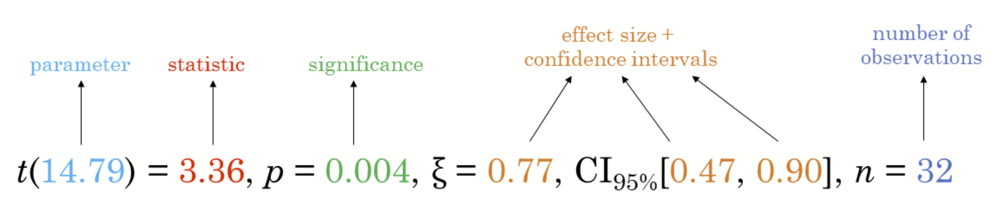
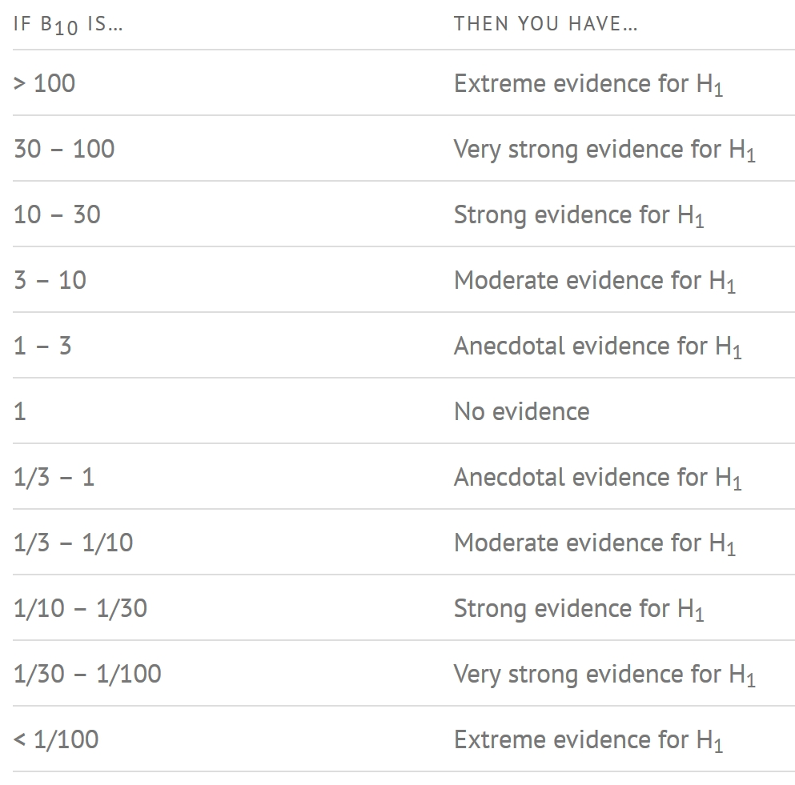
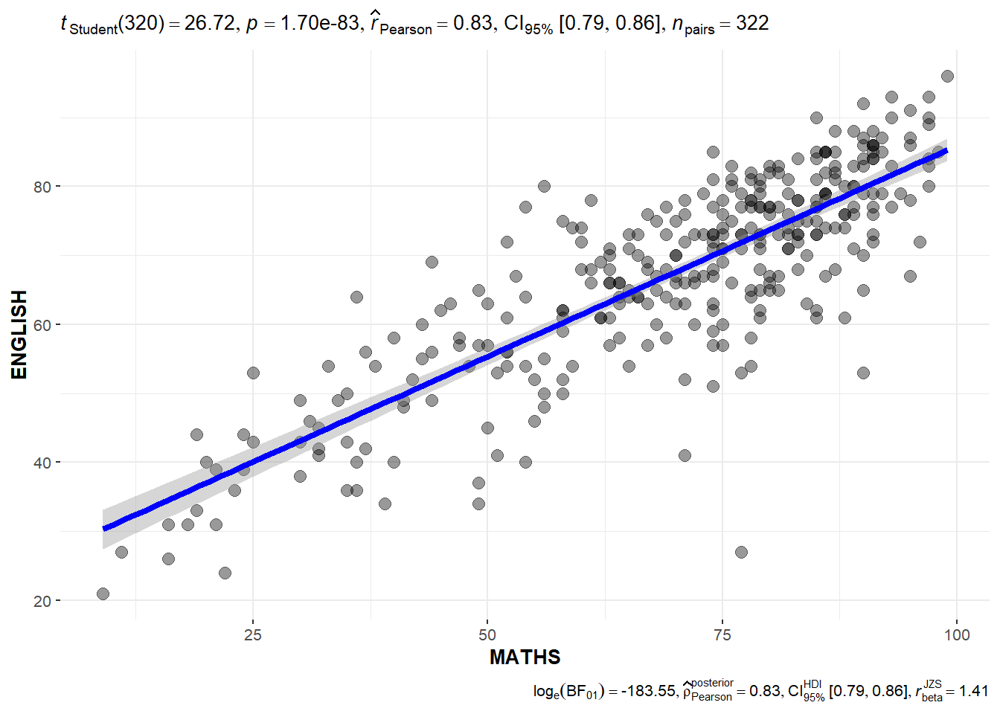
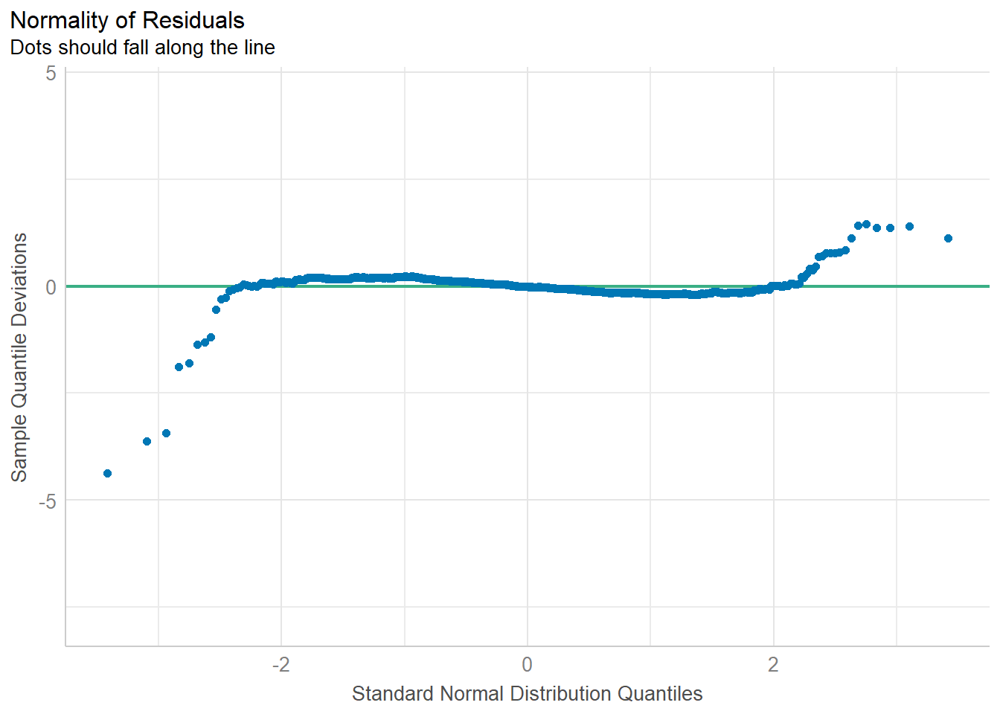
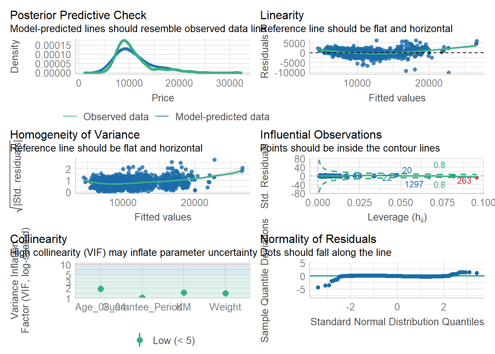

pacman::p_load(ggstatsplot, tidyverse)Hands on Exercise 04b: Visual Statistical Analysis
Overview
In this hands-on exercise, we will gain experience on using:
ggstatsplot package to create visual graphics with rich statistical information,
performance package to visualise model diagnostics, and
parameters package to visualise model parameters
ggstatplot  is an extension of the ggplot2 package for creating graphics with details from statistical tests included in the information-rich plots themselves in order to:
is an extension of the ggplot2 package for creating graphics with details from statistical tests included in the information-rich plots themselves in order to:
provide alternative statistical inference methods by default;
follow best practices for statistical reporting. For all statistical tests reported in the plots, the default template abides by the APA gold standard for statistical reporting. For example, here are results from a robust t-test:

Loading data
We will use ggstatsplot and tidyverse packages
We will be using Exam_data.csv
exam <- read_csv("data/Exam_data.csv")One-sample test: gghistostats() method
We build a visual of one-sample test on English scores using gghistostats()
set.seed(1234)
gghistostats(
data = exam,
x = ENGLISH,
type = "bayes",
test.value = 60,
xlab = "English scores"
)
Default information from left to right: - (logarithm of) Bayes Factor: Indicates the strength of evidence in favor of the alternative hypothesis (that the mean of ENGLISH is different from 60) versus the null hypothesis - posterior probability: he probability that the alternative hypothesis is true given the data sample sizes - Mean & Credible Interval: The posterior estimate of the mean and its uncertainty range - scale parameter (r) of the JZS (Jeffreys-Zellner-Siow) Cauchy prior
Understanding the Bayes Factor
A Bayes factor is the ratio of the likelihood of one particular hypothesis to the likelihood of another. It can be interpreted as a measure of the strength of evidence in favor of one theory among two competing theories. That’s because the Bayes factor gives us a way to evaluate the data in favor of a null hypothesis, and to use external information to do so. It tells us what the weight of the evidence is in favor of a given hypothesis.
When we are comparing two hypotheses, H1 (the alternate hypothesis) and H0 (the null hypothesis), the Bayes Factor is often written as B10. It can be defined mathematically as 
The Schwarz criterion is one of the easiest ways to calculate rough approximation of the Bayes Factor.
Interpreting the Bayes Factor
A Bayes Factor can be any positive number. One of the most common interpretations is this one—first proposed by Harold Jeffereys (1961) and slightly modified by Lee and Wagenmakers in 2013:
 ## Two-sample mean test: ggbetweenstats()
We build a visual for two-sample non-parametric test of Maths scores by gender using ggbetweenstats()
ggbetweenstats(
data = exam,
x = GENDER,
y = MATHS,
type = "np",
messages = FALSE
)
Default information from left to right: - Mann-Whitney test statistic (W) - p-value - Rank-Biserial Correlation (r): quantifies how much one group tends to have higher values than the other - Confidence Interval for r - Number of observations
Oneway ANOVA Test: ggbetweenstats() method
In the code chunk below, ggbetweenstats() is used to build a visual for One-way ANOVA test on English score by race.
ggbetweenstats(
data = exam,
x = RACE,
y = ENGLISH,
type = "p",
mean.ci = TRUE,
pairwise.comparisons = TRUE,
pairwise.display = "s",
p.adjust.method = "fdr",
messages = FALSE
)
pairwise.display parameters: - “ns” –> only non-significant - “s” –> only significant - “all” –> everything
ggbetweenstats - Summary of tests


Significant Test of Correlation: ggscatterstats()
Here we build a visual for Significant Test of Correlation between Maths scores and English scores.
ggscatterstats(
data = exam,
x = MATHS,
y = ENGLISH,
marginal = FALSE,
)
Significant Test of Association (Depedence) : ggbarstats() methods
We first bin the Maths scores into a 4-class variable by using cut().
exam1 <- exam %>%
mutate(MATHS_bins =
cut(MATHS,
breaks = c(0,60,75,85,100))
)In this code chunk below ggbarstats() is used to build a visual for Significant Test of Association
ggbarstats(exam1,
x = MATHS_bins,
y = GENDER)
Visualising Models
In this section, we will visualise model diagnostic and model parameters by using the parameters package.
We will use the Toyota Corolla case study to build a model to discover factors affecting prices of used-cars by taking into consideration a set of explanatory variables.
Loading data
pacman::p_load(readxl, performance, parameters, see)We will ingest the ToyotaCorolla.xls workbook and convert it into a tibble dataframe using R.
car_resale <- read_xls("data/ToyotaCorolla.xls",
"data")
car_resale# A tibble: 1,436 × 38
Id Model Price Age_08_04 Mfg_Month Mfg_Year KM Quarterly_Tax Weight
<dbl> <chr> <dbl> <dbl> <dbl> <dbl> <dbl> <dbl> <dbl>
1 81 TOYOTA … 18950 25 8 2002 20019 100 1180
2 1 TOYOTA … 13500 23 10 2002 46986 210 1165
3 2 TOYOTA … 13750 23 10 2002 72937 210 1165
4 3 TOYOTA… 13950 24 9 2002 41711 210 1165
5 4 TOYOTA … 14950 26 7 2002 48000 210 1165
6 5 TOYOTA … 13750 30 3 2002 38500 210 1170
7 6 TOYOTA … 12950 32 1 2002 61000 210 1170
8 7 TOYOTA… 16900 27 6 2002 94612 210 1245
9 8 TOYOTA … 18600 30 3 2002 75889 210 1245
10 44 TOYOTA … 16950 27 6 2002 110404 234 1255
# ℹ 1,426 more rows
# ℹ 29 more variables: Guarantee_Period <dbl>, HP_Bin <chr>, CC_bin <chr>,
# Doors <dbl>, Gears <dbl>, Cylinders <dbl>, Fuel_Type <chr>, Color <chr>,
# Met_Color <dbl>, Automatic <dbl>, Mfr_Guarantee <dbl>,
# BOVAG_Guarantee <dbl>, ABS <dbl>, Airbag_1 <dbl>, Airbag_2 <dbl>,
# Airco <dbl>, Automatic_airco <dbl>, Boardcomputer <dbl>, CD_Player <dbl>,
# Central_Lock <dbl>, Powered_Windows <dbl>, Power_Steering <dbl>, …Multiple Regression Model using lm()
The code chunk below is used to calibrate a multiple linear regression model by using lm() of Base Stats of R.
model <- lm(Price ~ Age_08_04 + Mfg_Year + KM +
Weight + Guarantee_Period, data = car_resale)
model
Call:
lm(formula = Price ~ Age_08_04 + Mfg_Year + KM + Weight + Guarantee_Period,
data = car_resale)
Coefficients:
(Intercept) Age_08_04 Mfg_Year KM
-2.637e+06 -1.409e+01 1.315e+03 -2.323e-02
Weight Guarantee_Period
1.903e+01 2.770e+01 Model Diagnostic: checking for multicolinearity
We check for multicollinearity in the features of the model using check_collinearity() of the performance package.
check_collinearity(model)# Check for Multicollinearity
Low Correlation
Term VIF VIF 95% CI Increased SE Tolerance Tolerance 95% CI
KM 1.46 [ 1.37, 1.57] 1.21 0.68 [0.64, 0.73]
Weight 1.41 [ 1.32, 1.51] 1.19 0.71 [0.66, 0.76]
Guarantee_Period 1.04 [ 1.01, 1.17] 1.02 0.97 [0.86, 0.99]
High Correlation
Term VIF VIF 95% CI Increased SE Tolerance Tolerance 95% CI
Age_08_04 31.07 [28.08, 34.38] 5.57 0.03 [0.03, 0.04]
Mfg_Year 31.16 [28.16, 34.48] 5.58 0.03 [0.03, 0.04]check_c <- check_collinearity(model)
plot(check_c)
Model Diagnostic: checking normality assumption
We check for normality in the data using check_normality() of the performance package.
model1 <- lm(Price ~ Age_08_04 + KM +
Weight + Guarantee_Period, data = car_resale)check_n <- check_normality(model1)
plot(check_n)
Model Diagnostic: Check model for homogeneity of variances
We use check_heteroscedasticity() of the performance package.
check_h <- check_heteroscedasticity(model1)
plot(check_h)
Model Diagnostic: Complete check
We can perform a complete check by using check_model()
check_model(model1)
Visualising Regression Parameters: see methods
We use plot() of see package and parameters() of parameters package to visualise the weights of a regression model.
plot(parameters(model1))
Visualising Regression Parameters: ggcoefstats() methods
We use ggcoefstats() of ggstatsplot package to visualise the parameters of a regression model.
ggcoefstats(model1,
output = "plot")